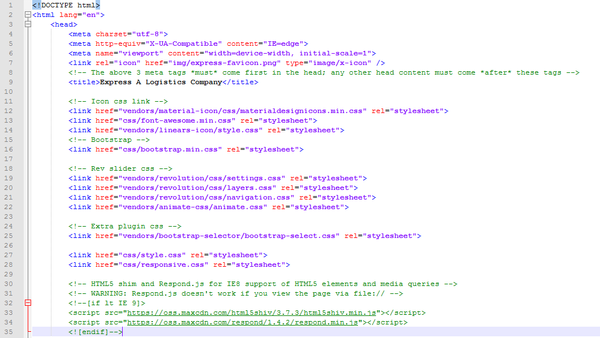
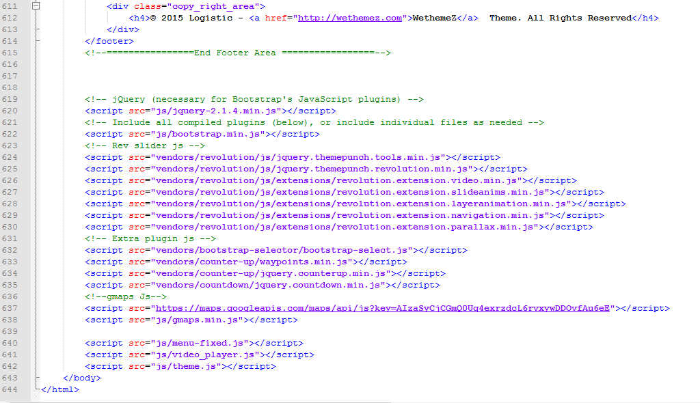
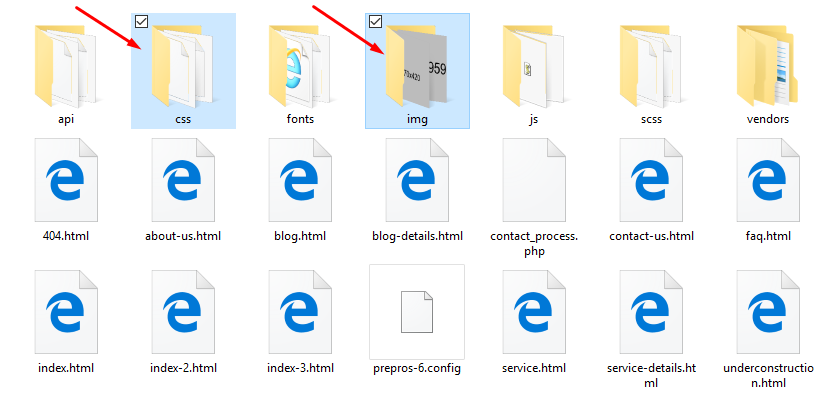
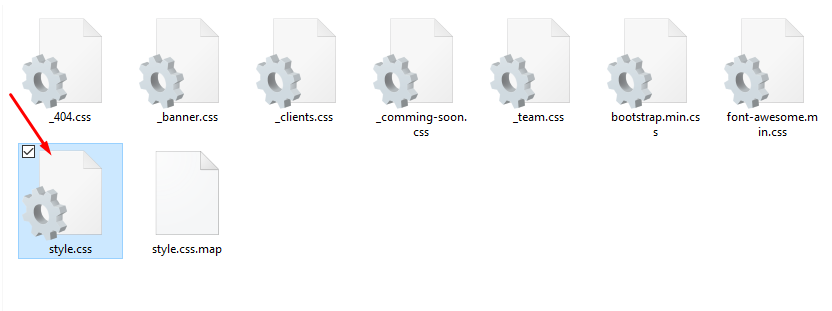
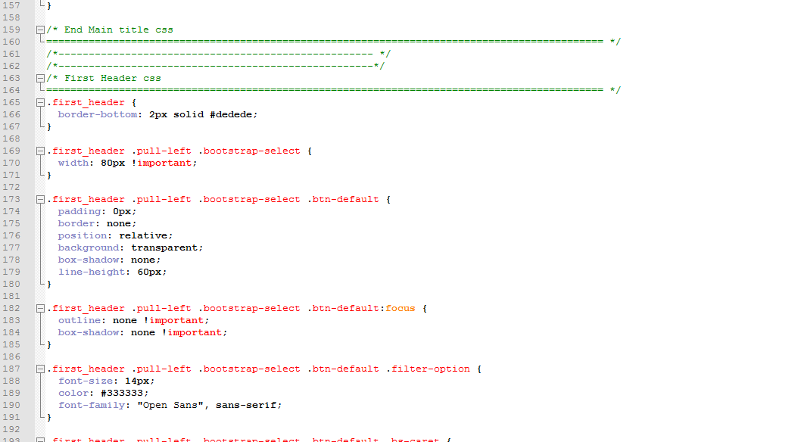
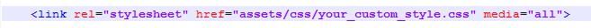
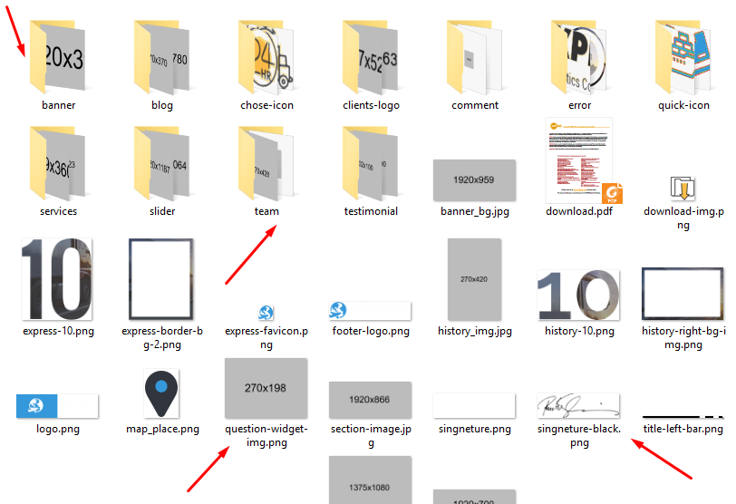
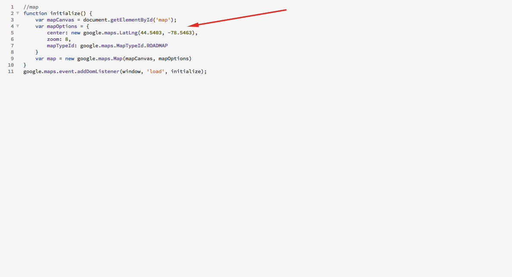

Thank you for purchasing my theme. If you have any questions that are beyond the scope of this help file, please feel free to email via my user page contact form here. Thanks so much!
The html template uses Bootstrap 3 with valid HTML5 tags. This theme is a responisve layout with one column. All of the information in content area is nested within a class and comes with predefined classes.
Header:

Footer:

We build Express HTML Template with very compatible CSS like SASS. It is the most mature, stable, and powerful professional grade CSS extension language in the world. You can edit or customize very essily. :)
Once you download the template, you can see a folder with several files and sub folders. You can read description of some important files in continue.
Open your desired folder like "css" or "img". Just included your code for your start point. You should choose one of those and start customizing components such as navbar, header, widget and footer to make a custom website for you. You can access to all of the available files in "Express" Folder.



If you want to use another css or currom css file to add here, just include these line

And replace your all Photo to placeholder images file

This theme imports three Javascript files.
[some Javascript goes here...along with an general explanation] [some Javascript goes here...along with an general explanation] [some Javascript goes here...along with an general explanation]
[some Javascript goes here...along with an general explanation]
I've used the following images, icons or other files as listed.
Edit your locations here

Once again, thank you so much for purchasing this theme. As I said at the beginning, I'd be glad to help you if you have any questions relating to this theme. No guarantees, but I'll do my best to assist. If you have any queries, please feel free to contact us at Support Center.
themezwe@gmail.com
weThemez